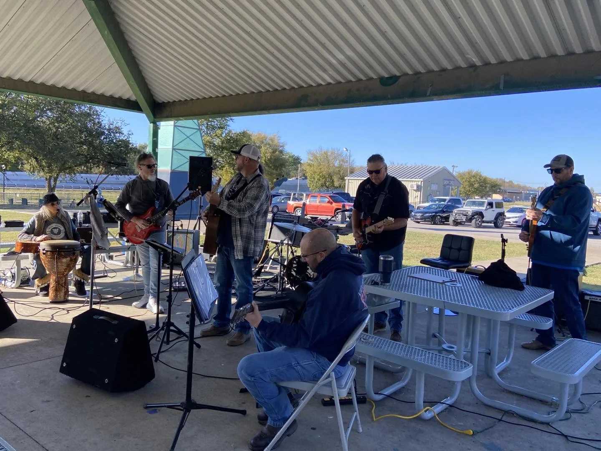
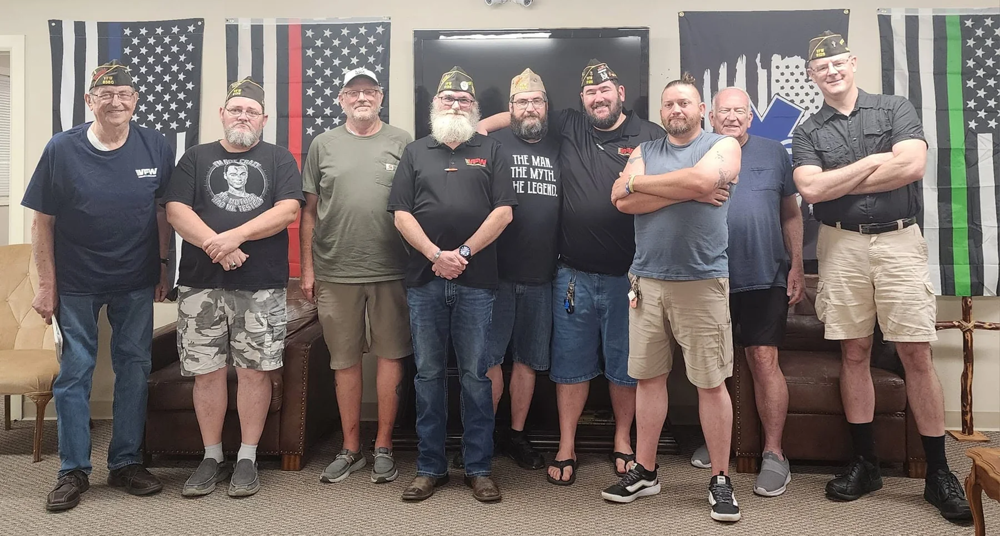
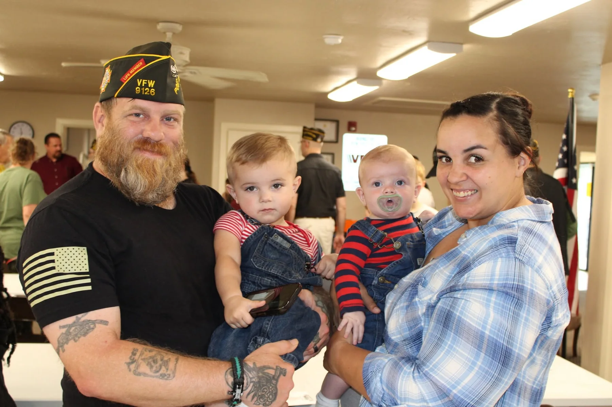

Veteran Program
Guitars for Vets
Free one-on-one music instruction helping veterans connect, learn and heal through the power of music.

Veteran-led and community-focused, Post 9126 is a place to connect, serve, find support and keep making a difference long after the uniform comes off.

Post 9126 is building a modern veteran community—one rooted in service and camaraderie, but open to meaningful connection with the community around us.
From limited financial relief to help connecting with VA disability and benefits resources, Post 9126 helps veterans find a path forward.
Community Wednesdays, social activities, special events and opportunities that bring people together.
Supporting Patriot’s Pen and Voice of Democracy while encouraging young people to engage with civic life.
Showing up for Glenpool through outreach, public events, holiday traditions and hands-on service.



There is more than one way to be part of Post 9126. Our programs are designed to meet veterans and community members where they are.
Free one-on-one music instruction helping veterans connect, learn and heal through the power of music.

Built around connection. Play together, meet people and become part of a welcoming gaming community.
Dungeons & Dragons, board games, movies and more. You do not have to be a veteran to walk through the door and join us.
Santa and Mrs. Claus welcome local families to the Post for a community holiday photo tradition.

Post 9126 welcomes eligible veterans from across America’s armed forces and honors the service that connects us.


See regular Post activities and upcoming events, with the full calendar kept current on our Events page.
Post open 12–5 PM · community-welcoming activities and connection.
Post open 1–5 PM. Guitars for Vets activities may also be scheduled.
Potluck at 5:00 PM, followed by the monthly Post meeting at 5:30 PM.
Reconnect with fellow veterans, serve your community and help shape what Post 9126 becomes next.
Follow VFW Post 9126
See the latest updates, event photos, community activity and Post news from our Facebook and Instagram pages.
Post 9126 on Facebook
@vfw_post_9126
Facebook and Instagram content is provided by Meta. Depending on your cookie preferences, embedded social content may remain blocked until you allow the applicable cookie category.